Installation et configuration
Cette partie s'adresse à la personne chargée de mettre en place SmartCampus (responsable informatique, prestataire). Elle explique chaque étape commande par commande ; il suffit de savoir copier-coller dans un terminal.
Comment la plateforme est construite#
SmartCampus comporte deux programmes qui fonctionnent ensemble :


| Élément | Dossier | Rôle |
|---|---|---|
| Backend (API) | back-istc/ |
Calculs, droits d'accès, base de données, fichiers. Écrit en Python / Django. |
| Frontend (interface) | frontend/ |
Les pages affichées dans le navigateur. Écrit en JavaScript / Next.js. |
| Base de données | — | PostgreSQL en production (SQLite pour un essai sur un poste). |
| Documentation | docs/ |
Ce site (généré avec MkDocs). |
Parcours conseillé#
- Prérequis : ce qu'il faut avoir avant de commencer.
- Installation sur un poste (test) : pour essayer la plateforme ou former les utilisateurs.
- Mise en ligne sur un serveur : l'installation définitive.
- Fichier de configuration (.env) : la liste de tous les réglages.
- Sauvegardes et restauration : à mettre en place dès le premier jour.
- Mettre à jour la plateforme.
- Dépannage : les erreurs courantes et leurs solutions.